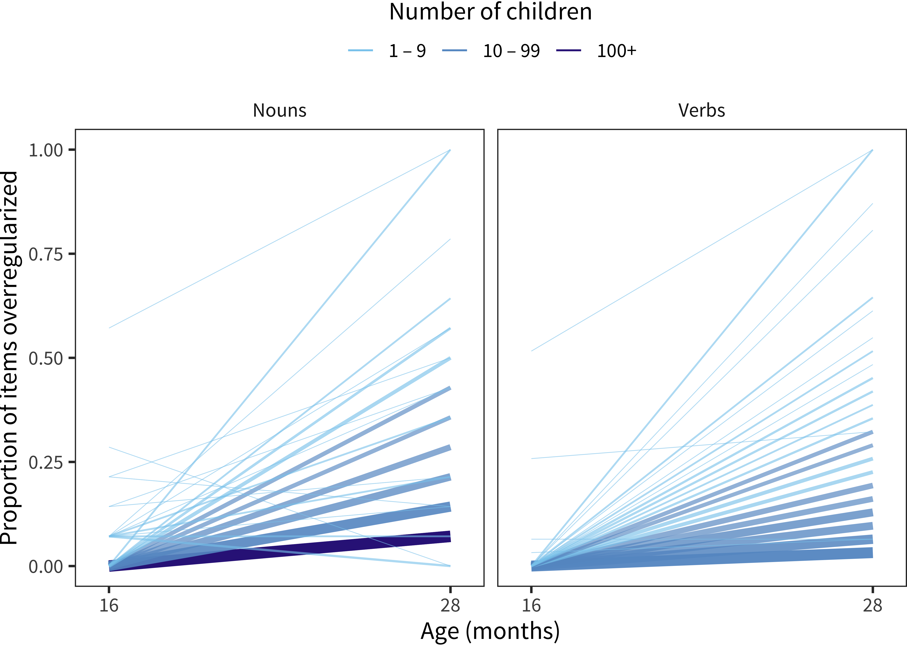

Chapter 14 Morphological Overgeneralization
Although Chapter 13 examined broad patterns of morphological development (along with grammatical development), we did not conduct any specific analyses of morphological development. In this brief chapter, we rectify that omission by examining patterns of generalization and overgeneralization. We focus on this phenomenon because morphological generalization has been an influential case study for language learning – and mental representation more broadly (???; ???). We begin by describing cross-sectional patterns of overgeneralization across languages and then turn to characterizing longitudinal change in overgeneralization in English and Norwegian.
14.1 Introduction and methods
Why morphological generalization, from an acquisition perspective (e.g., some languages have a lot more morphology than English - and even some have more morpho than grammar)
Also theory (e.g., rules/connections) - morpho has become a case study for mental representation more broadly. But it’s an open question whether this is right - morphology could be “special” (cf. some of the recent songbird stuff)
Turning to data. Descriptive studies of overregularization in child language - marcus, marchman
More recent work?
Our approach here depends on the fact that the original developers of the CDI were interested in this debate and included overregularizations as options in the morphological sections of the form. For example, an item like foot includes foots and feet as possible options to be checked. To take advantage of this, we coded overgeneralizations on each of the 5 WS-type forms for which we had access to data from these items (two from English dialects). We then used this coding to count the total proportion overregularizations by child, both overall and within noun and verb categories. We show analyses of these overregularizations for cross-sectional and longitudinal data below.
14.2 Cross-sectional data
| Language | N | Prop. noun overreg. | Prop. verb overreg. |
|---|---|---|---|
| Danish | 3714 | 0.05 | 0.03 |
| English (American) | 5520 | 0.04 | 0.03 |
| English (Australian) | 1497 | 0.04 | 0.03 |
| Norwegian | 9303 | 0.07 | 0.05 |
| Slovak | 1062 | 0.11 | 0.12 |
We begin by describing overregularization within the cross-sectional data. The proportion of overregularizations reported is not high overall. Slovak shows the highest rate, and it is still barely above 10% of total reports for these items. Thus, over-regularization is rare in a cross-sectional sample. Figure 14.1 shows each child’s proportion of overregularized items plotted by age. The major generalization from these data is that curves tend to be surprisingly flat – there are not large, consistent developmental increases for any language. The inset \(r^2\) for each panel in this graph show the variance explained by quadratic models of overregularization by age, quantitatively confirming the visual impression of limited developmental change.
Figure 14.1: Each child’s proportion of items overregularized as a function of their age size in each language (curves show model fits).
Figure 14.2: Each child’s proportion of overregularization as a function of their vocabulary size in each language (curves show model fits).
Interestingly, the same finding holds true for vocabulary. Overregularization does not appear to be tightly predicted by overall vocabulary size. Figure 14.2 shows findings from this analysis. While some slopes might be slightly higher (especially for verbs), overall the total developmental change predicted by vocabulary size seems limited. What predicts reports of overregularization then?
Figure 14.3: Each child’s proportion of verbs overregularized against proportion of nouns overregularized (lines show linear model fits).
One positive finding from our exploration is shown in Figure 14.3. The majority of children do not overregularize, but those who do are doing so across nouns and verbs quite consistently, across all of the languages in our sample. \(r^2\) values for the relationship between noun and verb over-regularizations range from 0.36 – 0.59, considerably higher than the relationships documented above. Thus, at a minimum we see within-individual stability in this measure. But we do not yet have a good way of predicting when particular children will show non-zero overregularization.
14.3 Longitudinal data
As in other chapters, we make use of the longitudinal data from the English (American) and Norwegian datasets. These data allow us to examine changes in generalization across individuals. Since data are sparser in the English data than the Norwegian, we pursue slightly different approaches to understanding these data.
For the English data, our analysis examines developmental changes within children. Figure ?? shows developmental change for children with pairs of observations.
Figure 14.4: For American English data, proportion of children falling into each bin in terms of number of nouns/verbs that they overregularize at 16 months and at 28 months (red bars indicate cases where the number of items is less at 28 months than at 16 months.

Because longitudinal data are so much more plentiful in the Norwegian dataset, we are able to map proportions within individual children. Figure ?? shows smoothed curves for those children with at least XYZ administrations. As in the cross-sectional data, we see noun and verb over-regularization traveling together developmentally. Further, we see that the moment that over-regularization is reported seems to vary substantially by child. Some children are continuing to increase their overregularization throughout the sampling period, while others go through a discrete phase (at least for the high-frequency items shown on the form) and then return to zero by the end of the sampling period at age 3. Others barely over-regularize in this period. Thus, at a minimum we can conclude there is truly substantial individual variation in overregularization.
Figure 14.5: For children in the Norwegian data with at least 10 administrations, the smoothed trajectories of proportion of nouns/verbs that they overregularize as a function of their age.
14.4 Conclusions
This brief chapter examined overregularization data from the morphology items of the Words and Sentences form. The primary takehome from our analyses is that there is tremendous heterogeneity in these data – many children are never reported to overgeneralize within the age range of the sample. Others do, however. This behavior is not well-predicted by age or vocabulary, however, making it somewhat mysterious what the drivers of over-regularization behavior are.
One possibility that bears discussion is whether parents are less keen observers of morphological generalization than they are of vocabulary growth more broadly. It is possible that the lack of systematicity we observed is due to inconsistency in which parents report overgeneralization – perhaps only some parents are sensitized to the somewhat meta-linguistic observation that their child is using a frequent ending incorrectly (e.g., foots). This kind of bias would be consistent with the noun-verb overregularization correlation we observed – only systematic validation outside of the CDI would truly dispell this worry.
On the other hand, the kind of variability we observed is not unlike the variability observed in naturalistic studies of overgeneralization (e.g., ???). Thus, at a minimum, our work here suggests caution in the received narrative of morphological generalization as just another stage in the predictable progression of language learning. Unlike, say, word combination (cf. Chapter 13), we do not see as clear a developmental march towards this more elusive behavior.